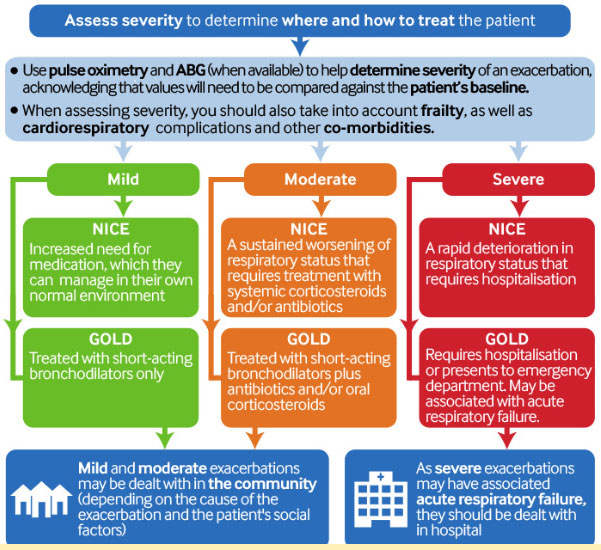

We use cookies to improve our service and to
tailor our content and advertising to you. You can manage your cookie settings via your browser at any time. To
learn more about how we use cookies, please see our
cookies policy
Be alert to the presence or imminent onset ofacute
respiratory failure. Involve your senior team if you suspect this.
Check for signs of life-threatening complications of COPD or common
comorbidities, such as cor pulmonale, haemodynamic instability, heart
failure, and sepsis.
Investigate and manage with the multidisciplinary team appropriately. Admission to a
higher level care facility (high dependency unit or intensive care unit) may be necessary.
Be aware that the patient’s status can change quickly.
Perform an arterial blood gas (ABG) to detect chronic hypercapnia and assess
for acute respiratory acidosis.
Patients with acute decompensated respiratory failure with acidaemia (pH <7.35 and
PaCO2 >6.5 kPa) have a poor prognosis.
In the community: consider referring the patient to hospital urgently if they have:
[1]
Sudden worsening of resting dyspnoea.
High respiratory rate/ acute respiratory failure (>30 breaths/minute).
Decreased oxygen saturations: SaO2 <90% on air [5] or deteriorating SaO2 in patients
with known hypoxaemia (i.e., those on long-term oxygen therapy).
Confusion or drowsiness.
Change in or onset of new physical signs, such as cyanosis or worsening peripheral
oedema. [5]
Failure to respond to initial management.
Serious comorbidities that would affect recovery or impact treatment, such as heart
failure, atrial fibrillation, or other cardiorespiratory conditions.
Insufficient support at home or in the community treatment setting.
Key Recommendations
Presentation
Patients typically present with dyspnoea, cough, and increased sputum purulence and volume
(the cardinal symptoms of an exacerbation of COPD). [1] [5]
Document the current degree of shortness of breath using a score validated for exacerbations.
Define how this has changed from the patient’s baseline and/or the rate of deterioration
using previous results or by asking the patient or family/carers.
Wheeze may also be present. [1] [5]
Identify any comorbidities and any other focal complaints
(e.g., chest pain, palpitations, light-headedness, or leg swelling).
Monitor the patient using an early warning score, such as the NEWS2
score. [41]
Check for signs of hyperinflation.
Auscultate:
This may reveal wheeze and/or crackles in the presence of concurrent infection or
pneumonia.
Note that patients or relatives may describe ‘wheeze’, especially on
exertion, which is actually upper airway transmitted noise and not wheeze.
Beware a ‘silent chest’ (decreased breath sounds), which may
indicate impending respiratory failure.
Diagnostic confirmation
Make a clinical diagnosis, dependent on the presence and severity of symptoms and a medical
history of COPD confirmed by previous spirometry results.
Exclude differential diagnoses that require immediate management, such as
acute myocardial infarction or pneumothorax.
Imaging
Request a chest x-ray (CXR) to check for pneumonic consolidation [5] and to exclude other
diagnoses, such as pneumothorax, lung cancer, or heart failure.
A CXR is also useful to check for the presence of respiratory, cardiac, or skeletal comorbidities.
[1]
Risk stratification
Exacerbations are defined by GOLD as mild, moderate, or severe. [1] Severe exacerbations may
have associated acute respiratory failure and should be dealt with in hospital. Mild and moderate
exacerbations may be dealt with in primary care or as an outpatient.
Initial observations and physical examination may be what you base decisions on until further results
are available. Once available, these results together with the history and examination findings
determine your management and escalation strategy for the patient.
Assess the severity of the exacerbation using a prognostic score, such as DECAF (Dyspnoea, Eosinopenia, Consolidation, Acidaemia, and atrial Fibrillation) or BAP-65. The score will
indicate which patients are likely to benefit from early intervention, such as non-invasive
ventilation.
Care planning
Determine escalation policies and ceilings of care.
You should:
Assess the patient’s symptoms compared with their baseline functional
status.
Obtain a collateral history urgently.
Plan with senior colleagues what to do if the patient deteriorates, including ‘ceilings
of care’ and consider DNACPR (‘Do Not Attempt Cardiopulmonary
Resuscitation’) for patients not suitable for escalation to an intensive care unit. [5]
Patients typically present with an acute worsening of one or more existing cardinal symptoms over several hours or days (requiring a subsequent change in medication):[1][5]
Dyspnoea
Cough
Sputum purulence and volume
Wheeze
Chest tightness
Dyspnoea
A common presenting feature of acute exacerbation of COPD. [1] [5]
Document the current degree of shortness of breath and exercise tolerance. Use a score validated for exacerbations or refer back to previous score results taken in the stable condition, such as the extended Medical Research Council dyspnoea (eMRCD) scale, which is used in stable COPD to grade the degree of breathlessness according to level of exertion. [50]
Define how this has changed from the patient’s baseline and/or the rate of deterioration, if possible, using previous results or by asking the patient or family/carers.
This helps determine the escalation strategy and what level of functionality to aim for upon discharge.
Patients may describe breathlessness in terms of reduced exercise capacity. For example, they might report only being able to walk 10 metres for the last couple of days, when they would usually be able to walk 50 metres before feeling short of breath.
Cough
The patient might report an increase in frequency or severity of cough; [1] [5] often productive.
Ask about an increase or change in character compared with the patient’s day-to-day cough.
Sputum quality may change with exacerbations or superimposed infection. [1][5]
Sputum purulence and volume
Ask if there is a change to the volume, thickness, or colour of the sputum.
Investigate for bronchiectasis in patients who repeatedly present with exacerbations with purulent sputum. [1]
An increase in sputum purulence may indicate the presence of bacteria. [1]
The presence of green sputum has been found to be 94.4% sensitive and 77% specific for the yield of a high bacterial load, identifying a distinct subset of patients in whom bacteria are strongly associated with the exacerbation. [37]
The most frequently identified bacterial pathogens includeHaemophilus influenzae , Streptococcus pneumoniae, and Moraxella catarrhalis. [22][23]
Viral infection may also cause increased sputum production alone or lead to an altered environment which may promote secondary bacterial infection. [37]
Co-infection with viruses and bacterial pathogens is not uncommon.
It may be difficult to evaluate sputum production as some patients swallow rather than expectorate it. [1] This will vary from patient to patient, but be aware of this possibility when asking patients about changes to volume or thickness. Ideally ask for a sample to assess the colour and thickness yourself.
Wheeze
Auscultate to check for presence of a wheeze. [1] Beware a ‘silent chest’ (decreased breath sounds), which may indicate impending respiratory failure.
May present as prolongation of the expiratory phase of breathing on examination.
Consider cardiac causes for wheeze or the presence of asthma. [54]
Transmitted upper airway noise ‘wheeze’ is common both as a symptom and as a sign. Be aware that patients or relatives may describe ‘wheeze’, especially on exertion, which is actually upper airway transmitted noise and not wheeze. Consider this on auscultation. Likewise wheeze heard at the end of the bed is often from the upper airway rather than small airways and may not improve with usual COPD treatment.
Chest tightness
Ask if the patient feels ‘tightness’ in the chest.
May result from worsened airflow limitation and chest hyperinflation. [19]
Chest pain is common secondary to coughing and/or increased work of breathing (respiratory muscle discomfort).
Consider the possibility of an asthma exacerbation, myocardial infarction, or pneumothorax if marked chest tightness or other chest discomfort/pain is present. Involve senior colleagues for appropriate investigation and management.
Many patients with COPD are elderly, frail, and may have comorbidities with abnormal baseline parameters. When assessing severity, consider any changes in symptom status relative to the patient’s baseline level rather than using absolute cut-offs.
Respiratory failure
Beware respiratory failure.
Patients may be peri-arrest due to type 1 (hypoxic) or type 2 (hypercapnic) respiratory failure.
In consultation with your senior team, arrange admission to a higher level care facility (high dependency unit or intensive care unit) if the exacerbation is severe and you detect signs of acute respiratory failure. Observe for:
Tachypnoea [1]
Accessory muscle use [1]
Chest retractions
Paradoxical movements of the abdomen
Cyanosis
Confusion [1]
Drowsiness
Silent chest.
History
Take a detailed history including:
Relevant medical history
Spirometry-confirmed diagnosis of COPD.
Ask about previous exacerbations and previous use of non-invasive ventilation, as patients with a history of two or more exacerbations in the preceding year, or those with a history of hospitalisation due to exacerbation in the previous year, are considered to be at high risk of subsequent exacerbations. [2] [47]
Change in symptoms: did existing symptoms worsen, or are there new symptoms? How long have the symptoms been present?
Consider taking a collateral history.
Recent infection: [1] [5] ask the patient if they have had increased cough, breathlessness, or mucopurulent sputum in the last 5 days. Ask if they have had a fever or noticed changes in sputum.
The most frequently identified bacterial pathogens in exacerbations of COPD include H influenzae, S pneumoniae, and M catarrhalis. [22][23]
Viral infection may also cause increased sputum production alone or lead to an altered environment which may promote secondary bacterial infection. [37]
Co-infection with viral and bacterial pathogens is not uncommon.
Consider differential diagnoses, such as acute exacerbation of asthma and heart failure.
Ask about gastro-oesophageal reflux and/or swallowing dysfunction, a possible trigger for exacerbations of COPD. [3] [4]
When asking a patient about previous exacerbations, bear in mind that they may not think in terms of ‘exacerbations’ but might instead explain that they received antibiotics and corticosteroids for a previous ‘chest infection’.
It might help to ask about the constellation of symptoms experienced (increased cough, breathlessness, and mucopurulent sputum) or to ask specific questions about previous:
Hospital visits
GP visits
Courses of oral corticosteroids or antibiotics.
Some patients keep corticosteroids as stand-by medication at home and therefore will be able to take a course without seeing a healthcare provider.
Symptoms of an exacerbation usually last 7 to 10 days, though may be longer. [1]
Risk factors for an exacerbation
Smoking: check if the patient currently smokes and/or they have had significant exposure to tobacco smoke. [5]
Exposure to pollution: [5] ask about wood smoke, dust, and other pollutants. This may include biofuel exposure from cooking over an open fire indoors. Check the patient’s occupation. It may expose them to pollutants or irritants that would cause an exacerbation.
. Medication
Check the patient’s adherence to routine COPD medication.
Ask about previous use of antibiotics (for COPD exacerbations or for other conditions). This may have led to resistant bacteria. [7]
Ask about recent use of oral corticosteroids. This may impact the available duration for further courses of corticosteroids. Consider the need to wean the dose down gradually at the time of stepping down medication.
Check if the patient currently uses supplemental oxygen.
Check if there has been any change in the patient’s use of a rescue inhaler.
Physical examination
Physical findings vary according to the severity of the exacerbation. Remember that the patient’s status can change quickly.
Use an ABCDE approach to assess the patient. In hospital, involve your senior team when needed.
Be alert for the presence or imminent onset of respiratory failure. Observe for:
Tachypnoea [1]
Accessory muscle use (which may be accompanied by pursed lip breathing) [1]
Chest retractions
Paradoxical movements of the abdomen
Cyanosis
Confusion [1]
Drowsiness [1]
Silent chest.
Arrange for admission to a higher level care facility (high dependency unit or intensive care unit) if the exacerbation is severe and if there are signs of acute respiratory failure (in consultation with your senior team).
Perform a physical examination of the patient.
Determine: [5]
Vital signs (including oxygen saturation [SaO2] via pulse oximetry or arterial blood gas [ABG]).[9]
All measurements of a patient's oxygen level -via pulse oximetry or ABG - should have the fraction of inspired oxygen (FiO2) or O2 flow rate documented.
Mental status.
Ability to continue to provide self-care at home.
Auscultate, checking for presence of wheeze and/or crackles if concurrent infection or pneumonia.underway
Note pulse rate and rhythm.
Atrial fibrillation is a common comorbidity and forms part of the DECAF score, a prognostic score which is used to predict in-hospital mortality.
Use initial observations and physical examination to guide early management decisions until investigations are under way. As test results become available, use these in conjunction with history and examination findings to determine management and escalation strategies for the patient.
Comorbidities
Check and monitor for signs of life-threatening complications of an acute exacerbation of COPD or comorbidities, [1] [5] such as cor pulmonale, haemodynamic instability, and sepsis.
Investigate any sinister symptoms, and manage in line with recommended approaches.
Involve your senior team; admission to a higher level care facility (high dependency unit or intensive care unit) may be necessary.
Check for signs of haemodynamic instability, such as: [57]
Pale, clammy skin
Peripheral cyanosis
Diminished urine output.
Check for a decline in mental status, which may indicate respiratory failure [1] or sepsis:
Remember that an exacerbation of COPD may coexist with other conditions, such as new-onset atrial fibrillation, congestive heart failure, or pneumonia. Conditions with similar presenting symptoms may need to be excluded or considered as comorbidities.
Consider comorbidities and complications of COPD contributing to the mortality risk.
A retrospective study looked at the autopsy results of 43 patients with a hospital admission diagnosis of COPD exacerbation. All had died within 24 hours of admission to hospital.
Respiratory failure due to a progression of COPD was the primary cause of death in only six patients (14%), highlighting the importance of considering comorbidities and complications of COPD.
The main (primary) causes of death were reported as:
cardiac failure (n = 16; 37.2%)
pneumonia (n = 12; 27.9%)
pulmonary thromboembolism (PTE) (n = 9; 20.9%).
The study concludes that there should be a focus on recognising and treating these conditions at the time of hospital admission. [38]
Cor pulmonale
Cor pulmonale may develop as a result of increased pulmonary artery hypoxaemic vasoconstriction due to exacerbation-induced hypoxaemia. The resulting increase in pulmonary vascular resistance and/or pulmonary artery pressure can lead to acute right heart failure.
If you suspect cor pulmonale, exclude other causes of peripheral oedema and make a clinical diagnosis based on the presence of: [5]
Peripheral oedema
Elevated jugular venous pressure
Hepatojugular reflux
Systolic parasternal heave
Relative hypotension
Loud pulmonary second heart sound.
These signs may be difficult to define in practice due to the presence of a hyperinflated chest.
Treat cor pulmonale caused by COPD by managing the COPD exacerbation. [5]
Use diuretics to control oedema.
Review the patient’s current medications.
Do not use the following medications to treat cor pulmonale caused by COPD: [5]
Alpha-blockers
Angiotensin-converting enzyme inhibitors
Calcium channel blockers
Digoxin (unless there is atrial fibrillation).
Consider assessment for long-term oxygen therapy as an outpatient.
Care planning
Early in your assessment, determine escalation policies and ‘ceilings of care’ with colleagues, the patient, and relatives. These are difficult conversations and can be distressing for patients. However, planning in this way avoids making hasty or ill-thought-out decisions later on.
Assess the exacerbation symptoms compared with the patient’s baseline functional status to help determine the escalation strategy.
Plan with senior colleagues what to do if the patient deteriorates, including ‘ceilings of care’;[5]consider DNACPR for patients not suitable for escalation to an intensive care unit.
Referral to intensive care (with a view to intubate and ventilate) is appropriate for many patients but, even if successful, may be associated with ICU-related complications.
Establish the existence of any advance directives. Some patients may express wishes not to be referred to higher level care.
Consider palliative care for appropriate patients with advanced disease.
Use a planning tool, such as the AMBER care bundle. [46]
The AMBER care bundle is a communication and planning tool used in hospitals in the UK. It supports a systematic approach for clinical teams to proactively manage the care of hospital patients who are facing an uncertain recovery and who are at risk of dying despite treatment. AMBER reflects the need for close attention to:
Assessment
Management
Best practice
Engagement
Recovery uncertain
In practice, this means:
Talk to the patient and their family to let them know that the healthcare team has concerns about their condition; establish their preferences and wishes
Decide together how the patient will be cared for should their condition get worse
Document a medical plan
Agree these plans with all members of the clinical team.
Monitor their condition closely and ensure daily follow-up. Record any changes and address any concerns that they or their family may have. [46]
Severity and treatment setting
There are no absolute criteria to determine the most appropriate treatment setting. Consider the full clinical picture in the context of the patient’s usual state.
Assess severity to determine where and how to treat the patient. [1][5]
Use clinical assessment and the change in symptoms from the patient’s baseline to gauge the severity of an exacerbation.
Take into account frailty and comorbidities.
Consult senior colleagues if you are uncertain of the best treatment setting.
Not all people with an exacerbation of COPD will require admission to hospital.It is safe to treat some patients in the community.
Some patients can manage an exacerbation themselves at home or at a community setting, with an appropriate management plan.
Along with the clinical presentation, a good understanding of the patient’s social and functional history as well as knowledge of the local services and support available will help to guide your decision on the best treatment setting for the patient.
Both GOLD and NICE guidelines stratify exacerbations into mild, moderate, and severe, based on the management required:[1] [5]

Referring to hospital
In the community: consider referring the patient to hospital urgently if they have: [1]
Sudden worsening of resting dyspnoea.
High respiratory rate/ acute respiratory failure (>30 breaths/minute).
Decreased oxygen saturations: SaO2 <90% on air [5] or deteriorating SaO2 in patients with known hypoxaemia (i.e., those on long-term oxygen therapy).
Confusion or drowsiness.
Change in or onset of new physical signs, such as cyanosis or worsening peripheral oedema. [5]
Failure to respond to initial management.
Serious comorbidities that would affect recovery or impact treatment, such as heart failure, atrial fibrillation, or other cardiorespiratory conditions.
Insufficient support at home or in the community treatment setting.
Severity assessment in hospital
In hospitalised patients, assess the severity of the exacerbation using a prognostic score, such as DECAF (Dyspnoea, Eosinopenia, Consolidation, Acidaemia, and atrial Fibrillation) [15] or BAP-65.
The score will indicate which patients are likely to benefit from early intervention, such as non-invasive ventilation.
Further stratify hospitalised patients based on their clinical signs: [1]
No respiratory failure:
Respiratory rate 20 to 30 breaths/minute.
No use of accessory respiratory muscles.
No change in mental status.
Supplemental oxygen given via Venturi mask up to 28% to 35% inspired oxygen (FiO2) restores oxygen saturations.
Ensure that there is no evidence of hypercapnia before moving to higher concentrations of oxygen.
Perform ongoing assessment of ABGs.
Document the FiO2 or O2 flow rate.
No increase in PaCO2.
Acute respiratory failure - non-life threatening:
Respiratory rate >30 breaths/minute.
Using accessory respiratory muscles.
No change in mental status.
Hypoxaemia improves when supplemental oxygen at higher concentrations is given via Venturi mask.
Ensure that there is no evidence of hypercapnia before moving to higher concentrations of oxygen.
Perform ongoing assessment of ABGs.
Document the FiO2 or O2 flow rate.
PaCO2 increased compared with baseline or elevated ~6.7 kPa (50-60 mmHg).
Acute respiratory failure - life threatening:
Respiratory rate >30 breaths/minute.
Using accessory respiratory muscles.
Acute changes in mental status.
Hypoxaemia not improved with supplemental oxygen via Venturi mask or increased FiO2.
You must ensure that there is no evidence of hypercapnia before moving to higher concentrations of oxygen.
Perform ongoing assessment of ABGs.
Document the FiO2 or O2 flow rate.
PaCO2 increased compared with baseline or elevated ~8 kPa (>60 mmHg) or acidosis present.
Investigations
ABG (in hospital)
Perform in patients with a moderate to severe acute exacerbation of COPD, when there is any evidence of hypercapnia, in all hypoxic patients, in all patients requiring oxygen, and all patients that seem unwell.
Use to detect chronic hypercapnia and assess for acute respiratory acidosis.
Ensure you compare results to prior baseline ABG (when available).
Document the FiO2 or O2 flow rate of any supplemental oxygen given (controlled oxygen given via a Venturi mask.
Performing the ABG while the patient is on controlled oxygen allows the A-a gradient to be established.
Acidaemia implies a severe exacerbation and predicts in-hospital and 30-day mortality. [48]
Repeat after 30 to 60 minutes to check for a rise in PaCO2 or a fall in pH. [9]
Venous blood gas sampling is not considered a reliable alternative measure. [8]
Some patients with known hypoxaemia (e.g., those on long-term oxygen therapy) may have low oxygen saturations usually. However, deteriorating SaO2 is concerning and should warrant an urgent assessment.
In hospital, use pulse oximetry at presentation to measure oxygen saturations as part of vital signs. [1] [9] In the community, use pulse oximetry if there are clinical features of a severe exacerbation. [5]
Ensure a good pulse wave is picked up by the device.
During an exacerbation, SaO2 is frequently depressed below the patient's baseline level.
Document the FiO2 or O2 flow rate if supplemental oxygen is given.
ECG (in hospital and in the community if available)
Perform an ECG as cardiovascular disease is common in people with COPD. [10]
Consider a myocardial infarction or pneumothorax if chest tightness or other chest discomfort is present. However, note that chest tightness is also a symptom of COPD due to airflow limitation and chest hyperinflation.
Patients with COPD are at higher risk of developing cardiac ischaemia and/or arrhythmias, such as new-onset atrial fibrillation, that can also lead to dyspnoea.
Perform in patients with moderate to severe exacerbations.
Screens for abnormalities that may suggest additional medical disorders, such as infection or anaemia.
Urea, electrolytes, and creatinine (in hospital)
Perform in patients with moderate to severe exacerbations.
An abnormal result may suggest additional medical disorders.
Patients with COPD exacerbations may have decreased oral intake and may become volume depleted.
CRP (in hospital)
Perform in patients with moderate to severe exacerbations.
An abnormal result may suggest presence of infection.
CXR (in hospital)
Request for patients with moderate to severe disease and/or suspected pneumonia.
Can be used to exclude differential or comorbid diagnoses, including pneumothorax, congestive heart failure, and pleural effusion.
Radiological changes seen in COPD include (but be aware these are not diagnostic of an exacerbation):
Flattened diaphragm and increased retrosternal air space volume, indicating lung hyperinflation
Hyperlucency of the lungs
Rapid tapering of vascular markings. [1]
Sputum microscopy, culture, and Gram stain (in hospital)
Obtain for potential bacterial pathogens that may have triggered the episode. Use in severe disease and if hospitalisation is being considered.
Not a routine investigation in primary care.
The most frequently identified bacterial pathogens include H influenzae, S pneumoniae, and M catarrhalis. [22][23]
Further investigations sometimes required in hospital
Blood cultures
Request if the patient has pyrexia.
Respiratory virus diagnostics
Consider in severe disease.
Use to identify any treatable agent.
Use to identify the need for expanded infection control precautions in hospital.
Cardiac troponin
Assess for an elevation, which would indicate myocardial injury.
COPD exacerbations can lead to myocardial injury.
Elevations in troponin may be associated with increased mortality. [11]
Serum theophylline level
Measure on admission for patients who are taking theophylline or aminophylline therapy. [5]
Pro brain natriuretic peptide
Use to exclude heart failure, a key differential of COPD exacerbation.
CT scan of chest
Use to exclude alternative diagnoses if the diagnosis and basis of respiratory decompensation remains uncertain after routine CXR.
May identify a pulmonary embolus, pneumonia, pleural effusion, or a malignancy.
Do not routinely order a chest CT. Only request a chest CT if you suspect malignancy, a pulmonary embolus, or bronchiectasis, or when considering surgery. [1] [5]
Do not assess the patient using peak flow or spirometry as acute investigations. These investigations are not recommended for assessment of an exacerbation due to the results being of lower quality [36] or unreliable. In practice, patients are often unable to perform a good quality forced expiratory manoeuvre during an acute exacerbation.
Emerging investigations
Procalcitonin
Procalcitonin is being investigated as a biomarker for the diagnosis of bacterial infections. [12] [44]
Higher levels of procalcitonin have been detected in severe bacterial infections. [12]
It may have a function in guiding when to use antibiotics for the treatment of lower respiratory tract infection, however this is unclear.
A Cochrane review of the use of procalcitonin to guide initiation and duration of antibiotic treatment in people with acute respiratory tract infections found it lowered the risk of mortality, and led to lower antibiotic consumption, and lower risk for antibiotic-related side effects in all patients, including those with acute exacerbation of COPD. [12] [CCA4] Further research is required to establish its use in clinical practice.
In a separate analysis of 1656 patients, 826 were randomly assigned to a group where the decision on whether to provide antibiotics was based on the results of a procalcitonin assay (830 patients were given usual care).[44]
The assay results did not result in less use of antibiotics.
There was no significant difference between the procalcitonin group and the usual-care group in antibiotic-days (mean 4.2 and 4.3 days, respectively; difference −0.05 days; 95% CI −0.6 to +0.5; P = 0.87) or the proportion of patients with adverse outcomes (11.7% [96 patients] and 13.1% [109 patients]; difference −1.5 percentage points; 95% CI, −4.6 to +1.7; P <0.001 for noninferiority) within 30 days. [44]
 Radial artery puncture animated demonstration
Radial artery puncture animated demonstration
 Radial artery puncture animated demonstration
Radial artery puncture animated demonstration
![]()